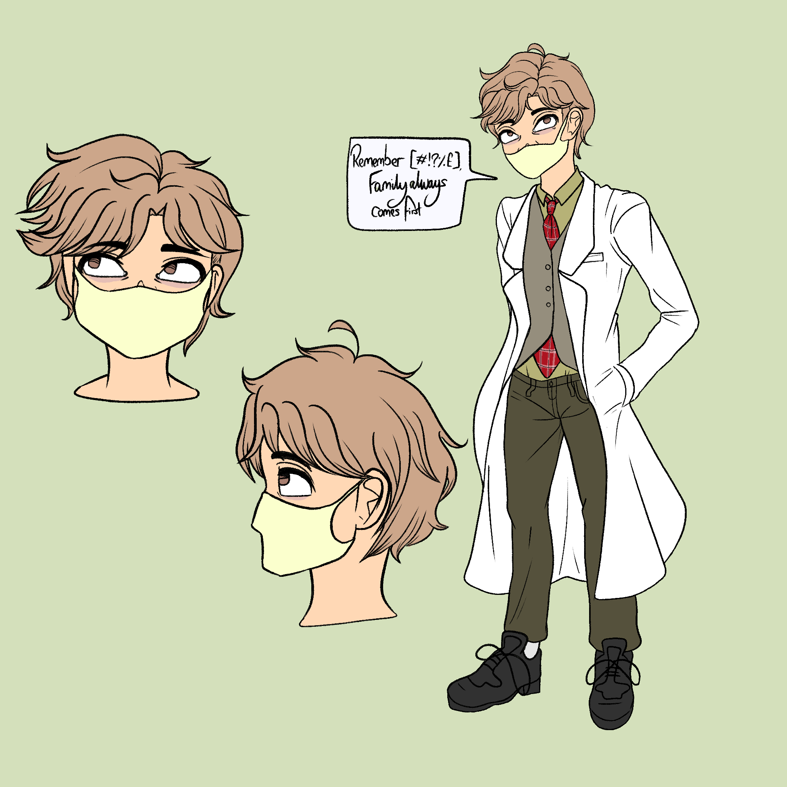
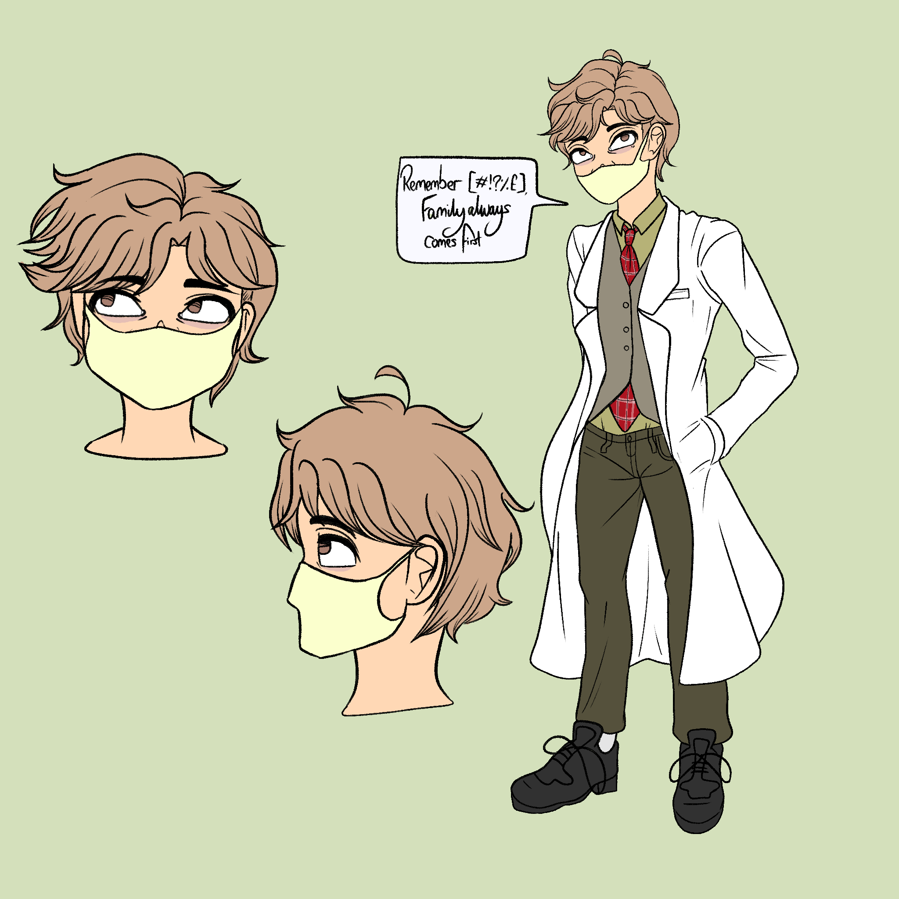
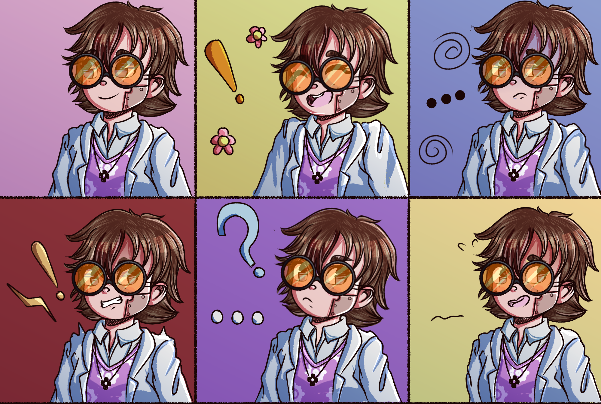
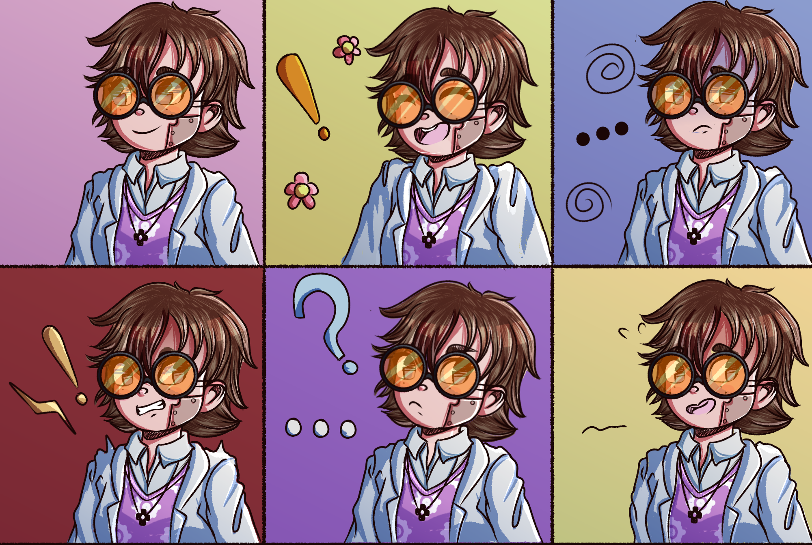

Dystinny is a passion project I've held for a few years now that I one day wish to work on seriously. The original intent was to create a dystopian comic alongside some friends of mine. However, over the years the idea branched out to developing Dystinny into an RPG Story teller which focuses heavily on the plot and characters whilst implementing original battle mechanics. My inspirations for this project include iconic titles such as 'Undertale' and 'Hearbound' and was heavily influenced by the RPG Maker Horror genre that was popularized by YouTube several years ago. Games such as 'Ao Oni', 'Misao' and 'IB'.
Displayed above were the original concepts for the cast. This was one of my earliest attempts at character designs and art as I had yet to refine my skills or develop an understanding for anatomy/character design. The player would play the character 'Tinny'; a genius scientist girl who lives on her own. The opening chapter would explain how her father had left a few years prior to bring his own inventions to the capital and earn fortune for their family. After deciding enough was enough, she ventures with her guardian and friend 'Geff' towards the center of the region and take her father home. Of course, due to the dystopian nature of the game, it would reveal not everything was as rainbows and sunshine as once thought.
Here are some more of the concepts and artworks updated from over the years. This project has never gotten past the writing and design phase (in terms of story telling and character development) but it is something I hope to return to later on.DISCLAIMER: Most of these drawings are outdated by a few years (2016-2019) therefore their look and art ability is not consistant. I plan to update this site in the case of returning to this project in my spare time.

 

 
